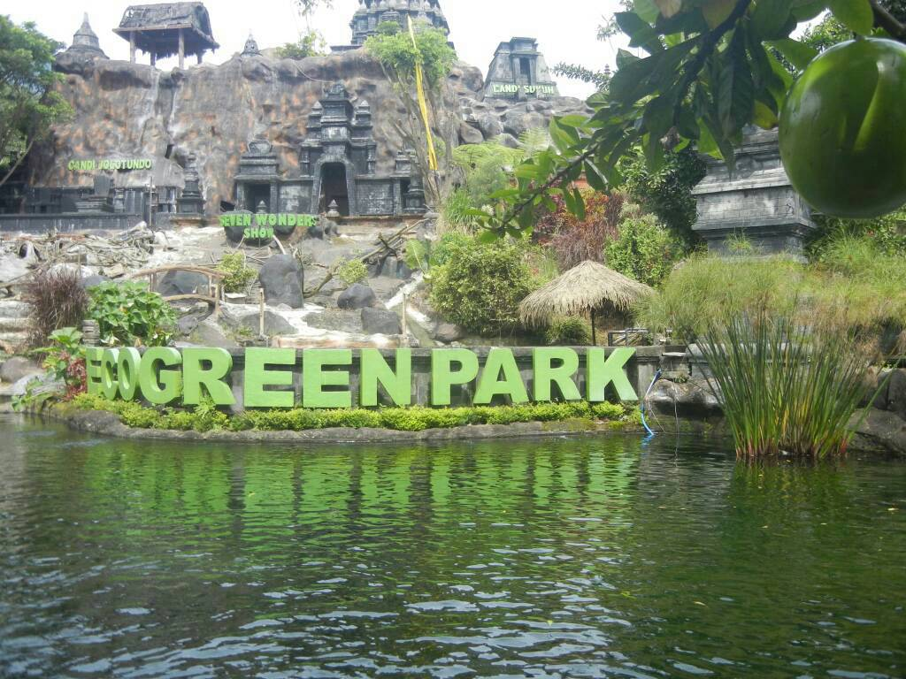
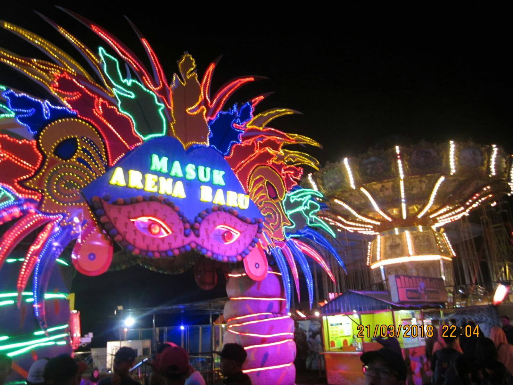

OUR FIFTH DAY! A FUN ADVENTURE PACKED DAY AWAITS! TRIP TO JARIM PARK, ZOOS, and BATU NIGHT SPECTACULAR!
On March 21, 2018, the children of St. Laurensia is invited to go to Batu Secret Zoo located in Batu city in Malang for Edutrip activities. Children are assigned to fill out the LKS that has been distributed while traveling around the place. The goal is to understand more about where and what to show.
The trip at Batu Secret Zoo begins with lunch at the food court available. However, because the food court is located far enough from the entrance, they are invited to pass one of the routes to the food court to look around the zoo. Upon arriving, the children finally order the food as they wish. After the meal, the teachers informed where the gathering place and the children were released to go around the Batu Secret Zoo.
With this, some children choose to get around and explore the place while looking at the collection of animals owned. However, some children also choose to play in the available areas that have several rides.
In its own zoo, there are many species of animals from easy to find to very rare to find. Because of the large number of animals, animals must be split into sections depending on their habitat and species. With that, visitors can visit the place depending on what they want to see. Sometimes, they also hold sessions to love to feed animals and invite the visitors to join the meal.
Aside from Batu Secret Zoo, there is also Eco Green Park which is basically a huge zoo for birds. It consists of most of the birds that exist all around the world.
In the area where there are rides, there are several rides that can be raised for entertainment. The atmosphere in the place is quite crowded with a choice of games to play. After walking around the place, they finally went to the gathering place that is the exit of the Secret Zoo Stone. After everything has gathered, the children continue their Edutrip activities by going to the Wildlife Museum.

BATU NIGHT SPECTACULAR
On March 21, 2018, 72 grade 8 students at SMP Santa Laurensia accompanied by 5 teachers went to Batu Night Spectacular in Malang to play and have fun together. Batu Night Spectacular is an entertainment venue operating at night with rides, live shows, carnival games & markets. In Batu Night Spectacular, there are many rides that can be visited such as Lampion Garden, Go Kart, and more.
Many students are having fun, all screaming, talking, playing with each other and it is a night to remember for fun, all the students spend each other's time, getting rest and the place is illuminated with beautiful lights, it looks very magical in evening. All the smiles and laughter all night and when it's almost over. Some students interviewed 3 of their friends for their opinions on the Batu Night Spectacular. The first visitors they interviewed were Nathanael Emmanuel Jiaw from grade 8F. Nathanael comes from Serpong, Banten. According to him, Batu Night Spectacular is interesting because there are many rides games and it makes people interested.
The second visitor they interviewed was Hikaru Nikki Pratama also from the 8F class. He comes from Tangerang, Indonesia and he does not know who the founder of Batu Night Spectacular or when this place opened. According to Hikaru, Batu Night Spectacular is interesting because of the many rides and various attractions. This place is fun to visit with family and friends. Batu Night Spectacular is different from other amusement park because it is night and it makes it stand out from other places.
The last visitors they interviewed were Valerie Valencia Southeast also from the 8F class. Valerie comes from Tangerang, Indonesia and she does not know who the founder of Batu Night Spectacular and he said, Batu Night Spectacular has been long opened. According to him, Batu Night Spectacular interesting because the place has a lot of interesting rides and the price is cheap.
